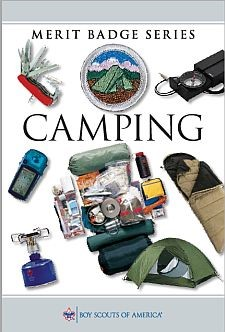
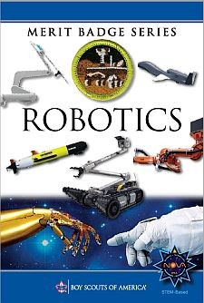

Back
I have been a Boy Scout with my local Troop for three and a half
years. During that time I have risen to the rank of Eagle.
I am currently the Senior patrol leader of my troop.
All Boy Scouts have the opportunity to earn Merit Badges.
Today there are over 130 merit badges available in a wide range
of topics which span from rifle shooting to basketry. A Scout earns
these badges after completing a number of activities and demonstrating
excellence in the certain area of study. The purpose of these
badges is to allow Scouts to discover more about certain subjects
and explore potential career opportunities. Each Merit Badge is
taught/led by a Merit Badge Counselor that has expertise in that area.
For example, my father is an Assistant Scout Master in my Troop.
He is a practicing attorney and is the Merit Badge counselor for the
Law Merit Badge as well as a number of others. Along with the Merit
Badge Workbook, there is a Worksheet that the Scout completes to ensure
that he has achieved all of the requirements for the badge. Merit
badges can be earned during troop meetings, at summer camp or at merit badge days.
Some sample merit badge booklets are below:
 In order to achieve the rank of Eagle Scout, the highest
rank in Boy Scouts, a Scout needs to earn 21 merit badges.
There are 13 badges that are required, and 8 the Scout can choose from the merit badges offered.
The required 13 are:
- Camping
- Personal Fitness
- Personal Management
- Swimming, Hiking or Cycling
- First Aid
- Citizenship in the Community
- Citizenship in the Nation
- Citizenship in the World
- Cooking
- Family Life
- Emergency Preparedness or Lifesaving
- Environmental Science or Sustainability
- Communication
My favorite merit badges include Archery, Reptile and Amphibian Studies and Programming.
The Archery Merit Badge was one of the first badges I earned.
I have done a lot of archery at summer camp and during my first
summer attending Boy Scout summer camp, I was able to earn that badge.
While at summer camp I earned my Reptile and Amphibian Studies
merit badge. We found snakes and amphibians under rocks and identified
them as part of earning this badge.
During the COVID pandemic, our troop has been meeting virtually.
Since I had some time, I decided that I wanted to earn the Programming
Merit Badge. I learned a new programming language (C#), completed all
of the requirements and built a program that self-populated the
answers to the questions on the worksheet.